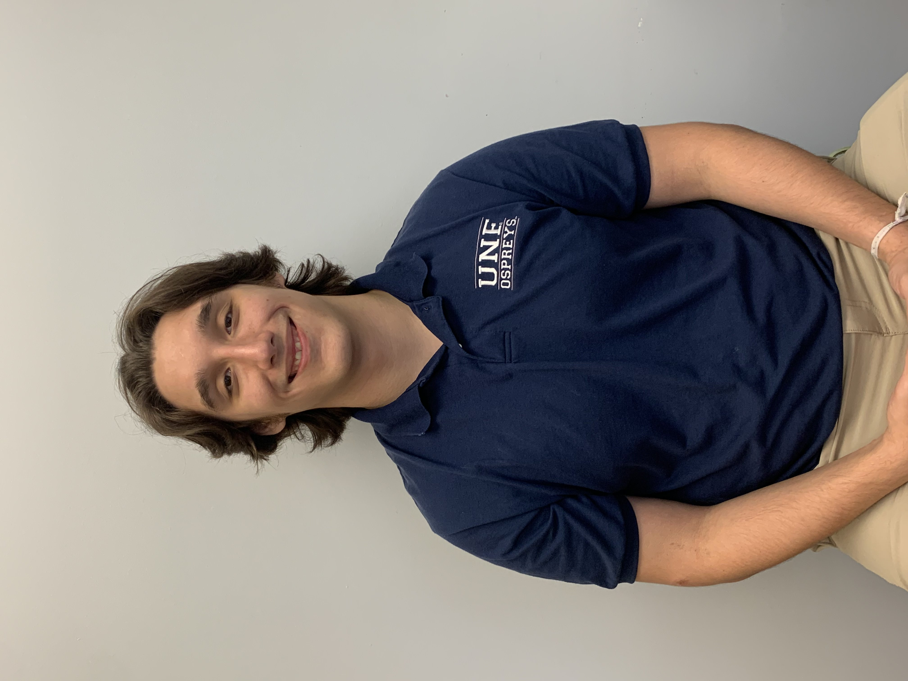

Welcome to my Web Portfolio
You can view my projects by clicking the links below.
About Me
Hey there! I'm Ivan Valdes, a current senior at UNF studying Information Science, with a Minor in Digital Marketing. I started off thinking about a business degree, but found it didn't grab my attention enough on its own. That's when I realized I had a knack for computing and problem-solving, which made Information Science the perfect blend for both my interests.
I'm a South Florida guy, originally from a town called Southwest Ranches. It was a peaceful place to grow up, not a lot of neighbors, which meant I had to keep myself entertained. This involved a lot of outdoor adventures like "hunting" lizards or just being out in nature. I played a lot of sports in high school - Ice Hockey, American Football - you name it. If it involved a bit of roughness and teamwork, I was there. I was really persistent with martial arts, and almost made it to black belt before college got in the way. If you look closely, you might spot the gunshot scar on my arm from an accident in high school - pretty wild, right?
When it comes to downtime, I love being outdoors, going for walks and hikes, especially when my girlfriend's with me. We have this fun little hobby of looking out for cool mushrooms like lions mane or reishi mushrooms. When I'm indoors, you'll usually find me gaming. I'm actually pretty good at an FPS called Rainbow 6 Siege, and was even ranked #72 worldwide once. I used to do motocross, but since moving to Jacksonville I had to sell my bike. On the nerdier side, I love getting absorbed into new programming languages and practices. I'm pretty excited to dive into my Intro to Computer Security Class!
Skills
- HTML
- CSS
- JavaScript
- ASP.NET MVC
- JIRA
- Python
- Java
- C
- C#
- R-Markdown
- R
- Posit.Clout
- Database Management
- Database Schema Creation
- SQL
- Azure
- Willing to learn anything
Projects
Project 1
This First project was only HTML and CSS. It was done to get comfortable with styling rules.
View ProjectProject 2
This Second project is HTML, CSS, and JavaScript. It uses css grid layout among some other cool css rules, and the JavaScript was used only for form validation.
View ProjectProject 3
This Third project is HTML, CSS, and JS. This time the focus was mainly on JS, creating multiple functions and then changing the DOM object's values for a specific object associated with the function.
View ProjectSenior Project
The following item is a link to the GitHub repo for my portion of the senior project so you can see how all my code was implemented throughout the project. The project was done for Florida Mission of Mercy, a non-profit organization that serves the less fortunate and provides free dental care.
View Project on GitHub Watch the Video DemoData Analytics Senior Project
The following link is to my Senior Data Analytics Project. We conducted tests on whether the suicide rate increased due to certain independent variables; the results were quite surprising.
View ProjectContact Me
Phone: 754-707-2290
Email: IvanValdes90520@gmail.com
LinkedIn: Ivan Valdes
Github: Ivan-Valdes14